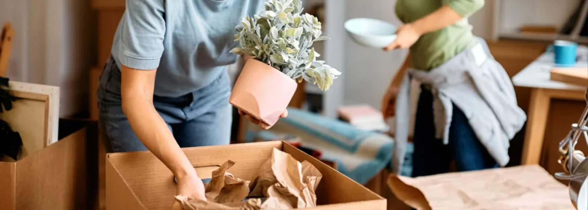

- Prix au m³ : 40 à 80 CHF/m³ en local, plus élevé en interurbain ou international
- Appartement 3.5 pièces : 800 à 2'500 CHF en fourchette indicative
- 4 facteurs clés : volume, distance, services inclus, période
- Frais cachés fréquents : étages sans ascenseur, distance de portage, emballage, week-end
- Bon réflexe : demander 2-3 devis comparatifs avant de signer
Comment est calculé le prix d'un déménagement en Suisse
Les entreprises de déménagement utilisent principalement deux modes de calcul, parfois combinés.
Le tarif au m³
C'est le mode le plus répandu en Suisse. Le déménageur estime le volume de votre mobilier (en mètres cubes), puis applique un tarif unitaire selon la distance et les services.
| Type de logement | Volume estimé |
|---|---|
| Studio (1.5 pièces) | 10 à 15 m³ |
| Appartement 2.5 pièces | 15 à 25 m³ |
| Appartement 3.5 pièces | 25 à 35 m³ |
| Appartement 4.5 pièces | 35 à 50 m³ |
| Maison individuelle | 50 à 80 m³ et + |
Le forfait
Pour les déménagements complexes ou avec services complets, le déménageur propose un forfait global. Plus prévisible pour vous, plus complet en prestations.
Les fourchettes de prix selon le type de déménagement
Les prix varient fortement selon la distance et les services demandés. Voici les fourchettes indicatives observées sur le marché suisse romand.
| Type de déménagement | Fourchette indicative | Détails |
|---|---|---|
| Studio local | 400 – 900 CHF | Distance courte, peu de volume |
| Appartement 2.5 pièces local | 600 – 1'500 CHF | Selon étages et accessibilité |
| Appartement 3.5 pièces local | 800 – 2'500 CHF | Cas le plus courant |
| Appartement 4.5 pièces local | 1'500 – 3'500 CHF | Volume important |
| Maison individuelle locale | 2'500 – 5'000 CHF + | Selon volume et accès |
| Déménagement interurbain | + 20 à 50% | Selon distance et trajet |
| Déménagement international | Sur devis spécifique | Formalités douanières incluses |
Pendant que votre camion roule, on s'occupe de votre fin de bail
58 sur 58 états des lieux validés
Voir le service fin de bail →Les 4 facteurs qui font varier le prix
1. Le volume à transporter
C'est le facteur principal. Plus vous avez de meubles et de cartons, plus le prix monte. Une astuce simple : faire le tri avant le devis. Un déménagement plus léger = un prix plus bas.
2. La distance et le trajet
Un déménagement dans la même ville coûte moins cher qu'un changement de canton, qui coûte moins cher qu'un déménagement international. À distance égale, certains trajets de montagne peuvent aussi coûter plus cher (temps de transport, péages, conditions d'accès).
3. Les services inclus
| Service | Coût supplémentaire indicatif |
|---|---|
| Fourniture des cartons et matériel | + 50 à 200 CHF |
| Emballage des objets fragiles | + 200 à 500 CHF |
| Démontage / remontage du mobilier | + 100 à 400 CHF |
| Stockage temporaire (box) | Variable selon durée |
| Démarches administratives | Souvent incluses chez les meilleurs |
| Transport piano ou œuvre d'art | + 200 à 800 CHF selon objet |
4. La période et le jour choisi
- Fin de mois (28-31) : la plus chargée, prix souvent majoré
- Week-end et jours fériés : généralement +10 à +30%
- Été (juin-septembre) : haute saison, créneaux rares
- Milieu de mois en semaine : prix les plus avantageux

Les frais cachés à connaître absolument
C'est l'erreur la plus fréquente : signer un devis sans vérifier ce qu'il n'inclut pas.
| Frais caché potentiel | Comment l'éviter |
|---|---|
| Étages sans ascenseur | Faire préciser dans le devis (souvent + 30 à 80 CHF/étage) |
| Distance de portage | Demander un devis "tout compris" si camion loin |
| Matériel d'emballage | Vérifier si inclus ou facturé en sus |
| Suppléments week-end / fériés | Faire mentionner explicitement |
| TVA | S'assurer qu'elle est incluse dans le prix affiché |
| Heures supplémentaires | Plafond ou forfait à clarifier |
| Stockage non prévu | Si retard d'emménagement, qui paie ? |
Comment obtenir le meilleur prix
- Triez avant le devis : moins de volume = prix plus bas
- Demandez 2 à 3 devis comparatifs auprès d'entreprises locales
- Choisissez un jour creux : mardi/mercredi en milieu de mois
- Privilégiez un forfait tout inclus plutôt que des prix séparés
- Négociez la coordination avec d'autres services (nettoyage de fin de bail, débarras)
- Vérifiez les avis et le numéro IDE de l'entreprise
Pourquoi un prix très bas est suspect
Un tarif anormalement bas cache presque toujours un problème :
- Pas d'assurance : tout dommage à votre charge
- Personnel non déclaré : aucun recours en cas de problème
- Devis "à partir de" : suppléments le jour J
- Matériel insuffisant : risque de casse, lenteur, frais cachés
- Rotation constante des équipes : qualité instable
Le coût d'un meuble cassé non couvert dépasse largement l'économie réalisée. Sur un déménagement à 3'000 CHF, payer 200 CHF de plus pour une vraie entreprise assurée est un calcul rentable.
FAQ – Prix déménagement Suisse
Combien coûte un déménagement pour un appartement de 3.5 pièces en Suisse ?
La fourchette indicative se situe entre 800 et 2'500 CHF pour un déménagement local. Le prix exact dépend du volume (25 à 35 m³ en moyenne), de la distance, des étages avec ou sans ascenseur, et des services inclus. Pour un déménagement interurbain ou international, prévoyez davantage.
Comment est calculé le prix d'un déménagement ?
Principalement au m³ (40 à 80 CHF/m³ en local), ou en forfait pour les prestations complètes. Les facteurs qui font varier ce calcul sont la distance, les étages sans ascenseur, l'accessibilité du camion, le jour choisi et les services optionnels comme l'emballage ou le démontage.
Un devis de déménagement est-il payant ?
Non, un devis doit toujours être gratuit et sans engagement. Une entreprise sérieuse établit un devis détaillé après une visite des lieux ou l'envoi de photos. Méfiez-vous des prestataires qui chiffrent par téléphone sans visite préalable.
Quand déménager pour payer moins cher ?
Évitez les fins de mois (28-31) et les week-ends. Le milieu de mois en semaine, idéalement un mardi ou un mercredi, est généralement 10 à 30% moins cher. Hors saison (octobre à mars), les tarifs peuvent aussi être plus avantageux.
Faut-il un devis pour un déménagement international ?
Oui, et impérativement par écrit. Un déménagement international implique des formalités douanières, une durée de transport plus longue et des frais variables selon la destination. Une entreprise spécialisée prendra en charge l'ensemble des papiers et inclura tout dans le devis.
En résumé
Le prix d'un déménagement en Suisse dépend de quatre facteurs : volume, distance, services inclus et période. Pour un appartement standard, comptez entre 800 et 2'500 CHF en fourchette indicative. Un devis sérieux est gratuit, écrit, détaillé et sans frais cachés. Méfiez-vous des tarifs anormalement bas et privilégiez une coordination globale (déménagement + nettoyage de fin de bail) pour gagner en sérénité et en cohérence budgétaire.